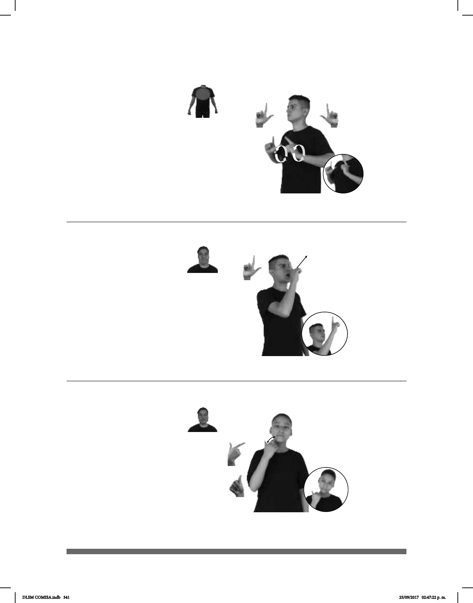

341
Alma (L-2)
Seña: SS
L.1
Palmas oblicuas
hacia el centro y hacia fuera.
Sobre el pecho.
Las manos se mue-
ven formando círculos.
1. sust. Persona
encargada de vigilar y hacer cumplir el
orden público, especialmente la que
pertenece al cuerpo de policía. 2.
sust. Persona que ha sido
contratada en un establecimiento,
por una institución, etc., para
promover sus negocios.
Seña: SM
Seña que pasa de
L.13 a A.3
Palma hacia adentro.
Sobre la mejilla.
El dedo índice se
retrae repetidamente.
adj. Que trata a las
demás personas con cortesía y
educación.
Seña: SM
L.1
Palma hacia la
izquierda.
A la altura de la boca.
Recto hacia el frente.
Boca a
bierta.
sust. f. Parte inmaterial
del ser humano a la que se le
atribuyen las propiedades
sentimientos, los valores morales y
el pensamiento.
Amable (A) (L-3)
(L-1)
pos-MI AMIGO TRABAJAR SIGNIFICA POLICIA AGENTE DEFENSA
Mi amigo trabaja como agente judicial.
_____________________________¡ ¡_
pro-YO ASUSTAR ALMA DESAPARECER
¡Del susto se me escapó el alma!
_____muy
pos-TU AMIGO AMABLE
Tu amigo es muy amable.
DLSM COMISA.indb 341 25/09/2017 02:47:22 p. m.